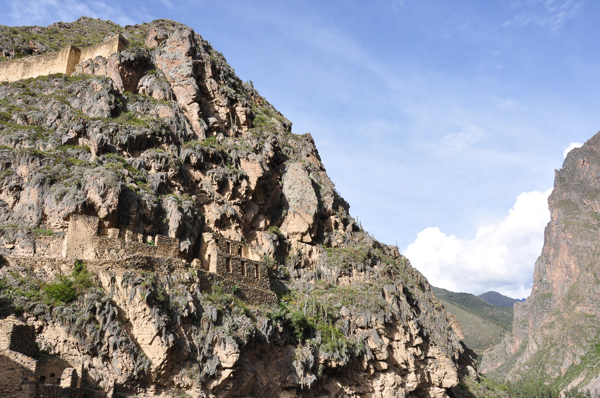
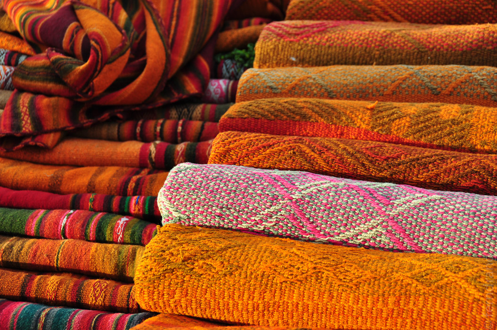

Auf dem Weg zwischen Cusco und Aguas Caliente bzw. Machu Picchu liegt das sogenannte Heilige Tal. Es ist im Inka-Sinn heilig, weil hier jede Menge Ruinen zu finden sind. Mit einem Tagesausflug kann man einige der Anlagen abklappern.
Nach einem entspannten Frühstück hat uns der Veranstalter der Tour leider vergessen. Wir haben gerade noch rechtzeitig bei ihm angerufen, und sind dann von einem aufgeregten Mädchen im Taxi abgeholt und zum Bus gebracht worden. Der Rest der Tour war leider genauso unentspannt. Zuerst ist der Bus kaputt gegangen, so dass wir wechseln mussten. Der Führer hat alles dreimal in schlimmem Spanisch erzählt, um es danach in einem noch weniger verständlichen Englisch-Spanisch-Mix zu wiederholen.
Der erste Stopp war in Pisaq. Dort konnten wir anderthalb Stunden durch eine Inka-Anlage wandern. In einen langen Hang sind akkurate Terrassen geschnitten, auf denen Landwirtschaft betrieben wurde. Wie immer finden sich neben den normalen Häusern auch die Ruinen vom architektonischen Kalender, mit dessen Hilfe die Inkas die Jahreszeiten bestimmt haben. An irgendeinem Tag, fällt ein Schatten über eine Ecke auf einen bestimmten Punkt und schon ist es Zeit die Saat auszubringen...
Anschließend ging es nach Ollantaytambo. Wir kannten den Ort schon, weil von hier aus am Vortag der Zug ging. Es ist aber ein hübsches, kleines Städtchen mit engen Pflasterstraßen und alten Häuschen. Neu für uns war die große Inka-Anlage. Zwischen zwei großen Felsen erstrecken sich hier die typischen Terrassen wie in einem gigantischen Theater. In den Ruinen gibt es riesige, behauene Steine, die mysteriösen Zwecken gedient haben.
Später haben wir noch einen Blick in ein altes Kirchlein in Chinchero werfen können. Für die Region typisch ist die Unlust am Fenster. Durch wenige, mickrige Löcher kommt das Licht hinein, so dass die goldene Pracht des Altars kaum erkennbar ist. Die Decke ist komplett bemalt und erinnert an die Webmuster der lokalen Trachten.
Der Rückweg führte in tollem Abendlicht durch die seichten Hügel nach Cusco. Am Horizont haben sich noch einige schneebedeckte Bergspitzen und Gletscher gezeigt.
In Cusco haben wir nur noch unser Gepäck abgeholt und sind in den Nachtbus nach Arequipa gestiegen. Die Busfahrt (mit Cruz del Sur) war erstaunlich. Wir haben nicht nur Abendessen und Getränke bekommen, sondern es wurde auch Bingo gespielt.
 